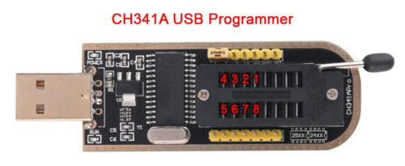
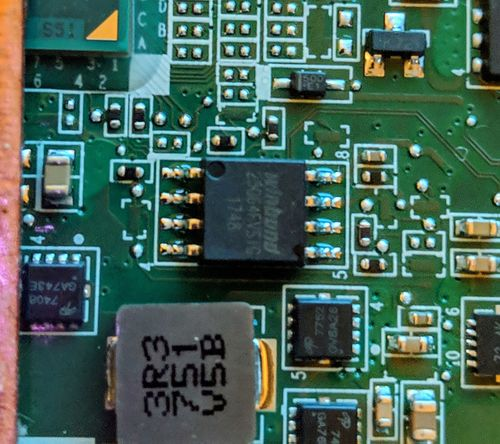
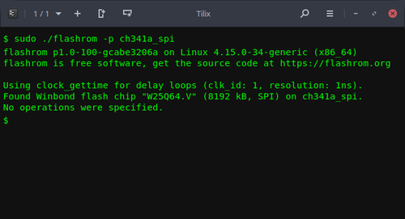

Unbricking
MrChromebox
Fixing a Chromebook bricked system with hardware disassembly and external devices.
Flashing/Unbricking with a CH341a USB programmer
Requirements
These devices all use a WSON-8 flash chip, which does not expose the pins of the chip, so they cannot easily be "clipped" like a SOIC-8 chip. While it is usually possible to modify a SOIC-8 chip clip to attach to a WSON-8 chip, it's less than ideal. Both Chromebook Pixels feature a Google debug header, which can connect to a debug servo with a special cable and be flashed that way, but not an option for most users (I however do have access to one, and can unbrick Chromebook Pixels for any users upon request).
- Disconnect all external power Remove bottom cover (screws are often located under rubber feet or strips) Disconnect the internal battery (for Chromeboxes, disconnect the small CMOS battery) Locate the SPI flash chip
- Boot your Linux environment (Ubuntu 2304 live USB or later recommended) Connect to WiFi/internet Open a (non-root) terminal/shell window, change to home directory
- Install flashrom via apt:
- Assemble CH341a programmer, 1.8v adapter (if needed), and chip clip/wiring. Ensure that pin 1 is correct and consistent.
- Connect the chip clip to the SPI flash chip, then connect the CH341a to the Linux host machine. Note the dot/depression indicating pin 1.
- Test connectivity and ensure the flash chip is properly identified:
- Flashrom will produce output identifying the flash chip. If it doesn't, double check your connections to the programmer and the chip clip and retry.
- Determine file to be flashed
- eg for the Acer Chromebook 14 CB3-431 (EDGAR)
- Don't forget to get the sha1 file for verification:
- Then verify the download:
- - The shellball firmware for the device As with the UEFI firmware above, the shellball rom can be downloaded by concatenating the shellball base path with the device-specific filename:
- eg for the Acer Chromebook 14 CB3-431 (EDGAR):
- IMPORTANT NOTE: you don't need to do this if flashing a stock firmware backup created by the Firmware Utility Script; that image already contains the VPD.
- For both the options below, we'll need to use the cbfstool (coreboot filesystem) binary, so let's download/extract that:
- Option 1: extract VPD from the firmware on device:
- Option 2: extract VPD from stock firmware backup created by Firmware Utility Script (this assumes the file has been copied into working directory):
- Then we inject the VPD into the firmware image to be flashed.
- Now the firmware image is ready to be flashed, and will maintain the device's unique serial, LAN MAC address, etc.
- Flash the firmware:
- Verify the firmware:
Instructions
Hardware Disassembly
While this is somewhat device-specific, the main points are the same:
Most ChromeOS devices use a Winbond flash chip, though some use a compatible chip from another manufacturer, eg Gigadevices. It will be either an 8MB or 16MB chip, with the identifier W25Q64[xx] (8MB) or W25Q128[xx] (16MB) where [xx] is usually FV or DV. We do not want to touch the EC firmware chip, which is identified by W25X40[xx]. Unfortunately, many devices have the flash chip located on the top side of the main board, and require fully removing the main board in order to flash. This is true for most Baytrail and Braswell models.
Pin 1 of the flash chip will be notated by a dot/depression on the chip; be sure to align this with pin 1 on the chip clip wiring (a red strip on the example linked above).
Googling should locate a disassembly guide for most models. If you can't find one for your exact model, try to find one for another model of the same manufacturer as the bottom cover removal tends to be very similar.
Preparing to flash
Once you have your device disassembled and flash chip located, time to boot up the flashing environment. Most any Linux setup should do as long as either flashrom is available from the distro's software repositories, or it's 64-bit x86 (in which case you can download a statically compiled build of flashrom from my site). This guide will use a Ubuntu 23.04 live session booted from USB.
So let's get to it:
cd;
sudo apt update
sudo apt install flashrom


sudo flashrom -p ch341a_spi

If you were flashing the UEFI firmware when things went sideways, then that's the easiest way to proceed. You can download the UEFI firmware for your device by examining the sources.sh file from the Firmware Utility Script GitGub repository. Simply concatenate the device-specific filename to the Full ROM base path:
wget
wget https://mrchromebox.tech/files/firmware/full_rom/coreboot_tiano-edgar-mrchromebox_20180827.rom
wget https://mrchromebox.tech/files/firmware/full_rom/coreboot_tiano-edgar-mrchromebox_20180827.rom.sha1
sha1sum -c coreboot_tiano-edgar-mrchromebox_20180827.rom.sha1
wget
wget https://mrchromebox.tech/files/firmware/shellball/shellball.edgar.bin
If you're not sure which file to use for your device / don't know your device's board name, you can reference:
https://mrchromebox.tech/#devices and/or https://www.chromium.org/chromium-os/developer-information-for-chrome-os-devices.
Persisting the board's Vital Product Data (VPD)
The firmware in all ChromeOS devices contains a section (RO_VPD) which stores board-specific data, like the serial number, localization settings, and on many devices which have an Ethernet port, the LAN MAC address as well. When flashing via the Firmware Utility Script, the script will automatically extract this from the running firmware and inject it into the firmware to be flashed, so the device serial, LAN MAC address, etc are all maintained. Without this, the device will use a default/generic LAN MAC address set by coreboot. While not ideal, this is only really an issue if two or more of the same device are on the same LAN segment (or you're statically assigning IP addresses based on MAC). But for completeness, if flashing the UEFI firmware or shellball ROM, we'll extract the VPD (either from the board itself or a backup made by the script) and inject it into the firmware to be flashed.
wget https://mrchromebox.tech/files/util/cbfstool.tar.gz && tar -zxf cbfstool.tar.gz
sudo flashrom -p ch341a_spi -r badflash.rom
./cbfstool badflash.rom read -r RO_VPD -f vpd.bin
./cbfstool stock-firmware-
./cbfstool
Flashing your device
Now that everything is prepared, time to flash the device. To be thorough, we'll perform a 2nd verification after flashing to ensure the integrity of the flashed firmware.
If flashing your own backup created by the Firmware Utility Script (or any backup made from a live system), use:
sudo flashrom -p ch341a_spi --ifd -i bios -w
or otherwise use:
sudo flashrom -p ch341a_spi -w
Where
Even though flashrom does this as part of the write process, verifying the entire flash chip is quick and an easy way to ensure everything went as it should: As before, if flashing your own backup created by the Firmware Utility Script (or any backup made from a live system), use:
sudo flashrom -p ch341a_spi --ifd -i bios -v
or otherwise use:
sudo flashrom -p ch341a_spi -v
using the same filename as before. If the verification passes, then disconnect the CH341a from the host machine, and then remove the chip clip.
Cleaning Up
Reassembly is the reverse of disassembly. Reconnect the internal battery and replace the bottom cover. Flip over the device, connect the external power, press the power button, and cross your fingers :)
Flashing/Unbricking with a Suzy-Q cable
Requirements
- Step 1
- Step 2
- Step 3